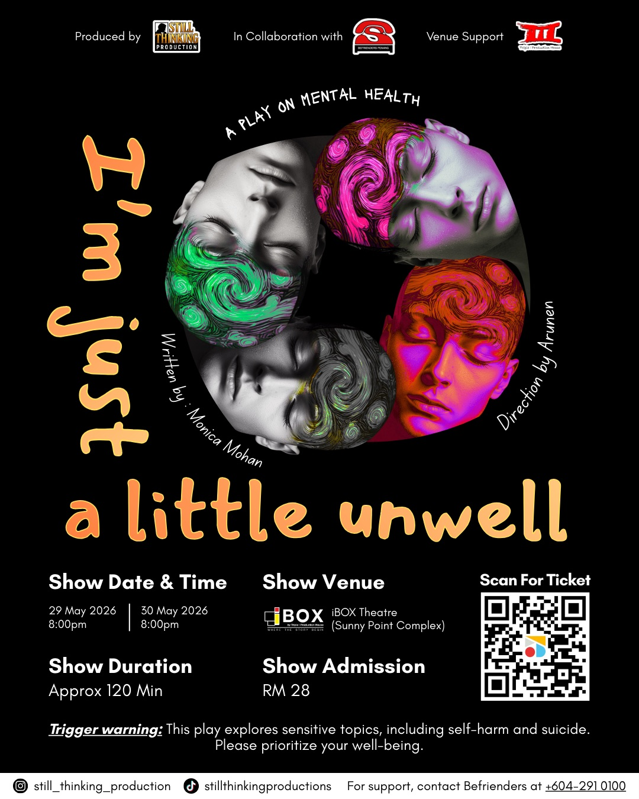

2026 • IBOX Theatre, Penang

A contemporary piece exploring the fragility of the human mind and the realities of mental health.
Full ensemble of Still Thinking Production
Directed and produced by Still Thinking Production